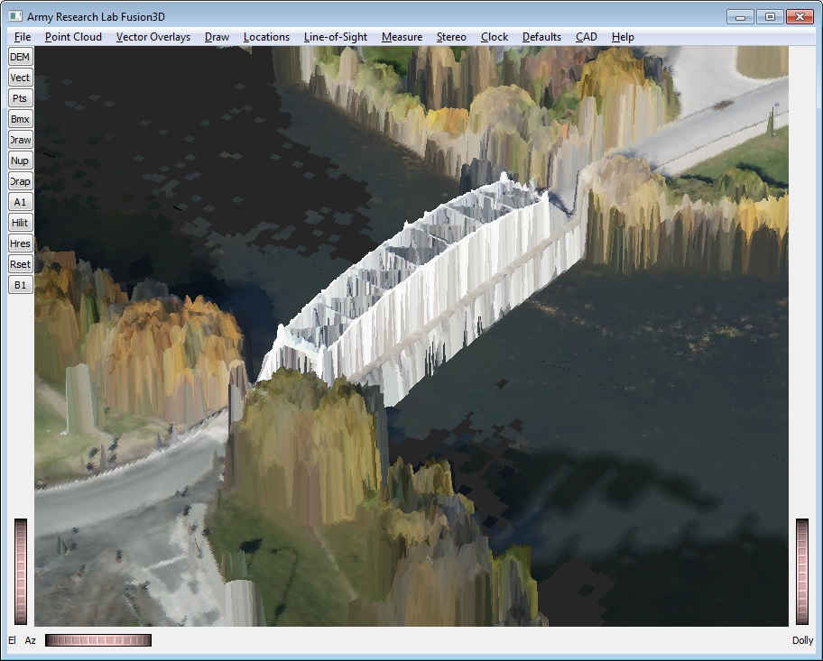

The rendering of the bridge shows the advantages of the Fusion3D visualization technique where the standard approach of draping the DSM obscures all the important bridge detail (see image below). Trees look rough and approximate what you would see with a point cloud. The smooth areas, however, remain smooth and unbroken even when you zoom in closely. Contrast this with the image below as would be rendered with other viewers.
Also, note that there is a sign and a light pole on the right side of the road at the lower left of the picture.
The top edge of these were sampled by the lidar and they show up correctly in the Fusion3D rendering (just visible in this image).
In the draped image below, the poles look virtually identical to the trees and could easily be missed.

The second picture shows the same bridge in Ottawa as it would be rendered with any other viewer that we know of.
These viewers drape the DSM with a single surface, causing the unnatural 'melted chocolate' look and obscuring detail.
There is a user's manual that can be accessed either through the 'Help' menu in the Fusion3D viewer or by setting your browser to the file 'doc/index.html'. In the user's manual there are PowerPoint tutorials on 'Getting Started' as well as other basic features.
There is a sample map provided in the distribution that includes both DSMs and point clouds. This map is described in file 'README_SAMPLE_DATA.html'.
There is also a Reference Manual currently under development. If there is interest, this manual will be added to the distribution.
Below are instructions for building the Fusion3D viewer. Note that it does not require formal installation A Visual Studio 2017 solution is provided as well as CMake files that have been tested on Windows and Linux (Ubuntu) system.
| Library | Required | Preprocessor | Notes |
|---|---|---|---|
| Flag | |||
| Coin3d | Required | LIBS_COIN | Core graphics library inplementing the OpenInventor API |
| SoQt | Required | LIBS_SOQT | Bridge library implementing OS-dependent OpenInventor functions through Qt |
| Qt | Required | LIBS_QT | Multi-platform operating system interface |
| GDAL | Required | LIBS_GDAL | General-purpose library for import/export of vector and raster file formats |
| MrSID | Required | LIBS_MRSID | Import only library for MrSID images (used for texturing the DEM maps) |
| Libkml | VS Debug Only | LIBS_KML | Import/export of KML files |
| assimp | Optional | LIBS_ASSIMP | No core functionality but necessary to overlay CAD models onto the maps |
1. Assimp library is required only to overlay CAD models onto the terrain maps. It can import many CAD formats including .obj, COLLADA 2. GDAL includes a release version of the KML libraries However, for Visual Studio Libkml is written to be internal to the calling code rather than accessed through a .dll, the release libraries are inconsistent with the debug version, and a debug version of Libkml is required.
There are Coin3d binaries available for Windows (both 32- and 64-bit). For other OSs, there are CMake files for building.
There are SoQt binaries available for Windows (both 32- and 64-bit). For other OSs, there are CMake files for building.
| Library | Version | Release | Debug | Notes |
|---|---|---|---|---|
| Tested | ||||
| Coin3d | 4.0 | Required | Required | Core graphics library inplementing the OpenInventor API |
| SoQt | 1.6.0 | Required | Required | Bridge library implementing OS-dependent OpenInventor functions through Qt |
| Qt | 5.12.6 | Required | Required | Multi-platform operating system interface |
| GDAL | 2.4.0 | Required | Required | General-purpose library for import/export of vector and raster file formats |
| MrSID | 9.5.4 | Required | Required | Import only library for MrSID images (used for texturing the DEM maps) |
| Libkml | 2.2 | Not Needed | Required | Import/export of KML files |
| assimp | 5.0.1 | Optional | Optional | No core functionality but necessary to overlay CAD models onto the maps |
Set environment variable to provide the path to platform-specific plugins: QT_QPA_PLATFORM_PLUGIN =\plugins\platforms
Building with Visual Studio and Qt requires that the Visual Studio Qt Addin be installed. This addin is available free as a .vsix file that will automatically install when opened.
The following changes will probably have to be made to the solution:
The optional Assimp library: Library included in the premade solution To remove it: All Projects -> Properties -> C/C++ -> Preprocessor -> Preproc Defs: Delete LIBS_ASSIMP Fusion3D/TestAdelaide Projects -> Properties -> Linker -> Input: delete assimp-vc141-mt.lib Modify paths to Include Directories for the external libraries listed above lfusion3d Project -> Properties -> C/C++ -> General -> Additional Include Dirs: modify paths Modify paths to Library Directories for the external libraries listed above Fusion3D/TestAdelaide Projects -> Properties -> Linker -> General: modify paths
First, the external libraries are built separately rather than being built within the Fusion3D CMake structure. In many cases, the easiest way to get the libraries is to get the binaries. Also, the Coin and SoQt libraries are not heavily maintained and may have issues building with CMake. It should be easier to deal with potential problems building them separately. Paths to the external libraries are defined near the top of the root CMake file and must be edited to point the the installed location of the libraries.
Second, Visual Studio by convention builds multiple configurations in the same solution. Typically, these are 'x86' (the 32-bit version) 'Release' and 'Debug' and 'x64' (the 64-bit version) 'Release' and 'Debug'. The default in the root CMakeLists.txt is to build both Release and Debug for x64. At the top of that file you can choose instead to build a single configuration or to build x86.
The Visual Studio solution will have the correct parameters for the chosen configurations, but parameters for other configurations will be wrong. One can either generate separate Visual Studio Solutions for each configuration or modify the single Visual Studio solution for other configurations. Most of the necessary parameters, particularly ones internal to Visual Studio, are modified appropriatly. Others, like external library '.lib' files will be copied without changes and will need to be edited.
Building with Visual Studio and Qt requires that the Visual Studio Qt Addin be installed. This addin is available free as a .vsix file that will automatically install when opened. CMake for Windows/VisualStudio requires the UCRT SDK (Universal C Runtime Library) If it does not find this, then it will not find the C++ compiler and abort This should be standard in Windows10 but is an optional component of Visual Studio and may need an additional install
Editing the CMake file As described in more detail above, the root CMake file must be edited to establish the basic configuration and pathnames to libraries will also have to be modified. Basic GUI parameters: Where is the source code: The Fusion3D root directory (with root CmakeLists.txt file) Where to build the binaries: Conventionally this is done in a Fusion3d subdirectory like 'build' After pressing Configure button, on the resulting submenu: Specify the generator for this project: From the pulldown, enter the IDE or compiler of choice Optional platform for generator (if empty, uses Win32): For x64, select 'x64' from the pulldown menu Generate: This should create a Visual Studio solution Comments: Choosing the x64 platform from the submenu will cause Visual Studio to default to 64-bit configuration (both Release and Debug). As described above, the x86 Release/Debug can also be generated from the single Visual Studio solution. Parameters for the chosen configuration will be correct, but other configurations will not. Some of the parameters will be correctly modified but others will have to be edited by hand.
1. Go to Fusion3D root directory (with root CmakeLists.txt file) 2. For x64 Release/Debug cmake -A x64 -H"." -B"./build" For x86 Release/Debug (Visual Studio defaults to x86) cmake -H"." -B"./build"
| Library | Version | Required | Method | Package | Notes |
|---|---|---|---|---|---|
| Tested | |||||
| Coin3d | 4.0 | Required | Made from source using CMake | Core graphics library inplementing the OpenInventor API | |
| SoQt | 1.6.0 | Required | Made from source using CMake | Bridge library for OS-dependent OpenInventor functions through Qt | |
| Qt | 5.5.1 | Required | Ubuntu standard install | qt5-default | Multi-platform operating system interface |
| GDAL | 2.2.1/3.0.4 | Required | Ubuntu standard install | libgdal-dev | General-purpose library for import/export of vector/raster formats |
| MrSID | 9.5.4 | Required | Download bin from Lizardtech | Import only library for MrSID images (used for texturing DEM maps) | |
| Libkml | Not Needed | Should be included in GDAL | Import/export of KML files | ||
| assimp | 3.2 | Optional | Ubuntu standard install | libassimp-dev | No core functionality but necessary to overlay CAD onto maps |
1. It is important that Qt be installed using the standard Ubuntu install procedure ('sudo apt-get install qt5-default') rather than downloaded
from the Qt website using their online installer. Otherwise there can be errors Qt platform plugin cant be found/loaded.
In /etc/ld.conf.so Create file 'randomLibs.conf' Enter complete pathnames to all required .so files (eg. /home/arl/coin-4.0.0-x64/lib) Update the the system by running sudo ldconfig
1. As provided, both Debug and Release versions are made simultaneously to be combined into a single Visual Studio solution. Command line CMake and many linux IDEs like Code::Blocks allow only one Debug/Release version at a time. Uncomment the line to make the desired option: # set(CMAKE_BUILD_TYPE Release) # Debug / Release 2. Set the desired install directory by modifying the following line: set(CMAKE_INSTALL_PREFIX "C:/Fusion3D") # 3. Some external libraries like GDAL and KML will probably be installed so CMake will find them in standard directories In this case, you can modify the lines that cause CMake to look for them in specified directories: option(ADD_DIRS_GDAL "Libs and includes not in default dirs -- GDAL" OFF) option(ADD_DIRS_KML "Libs and includes not in default dirs -- KML" OFF) 4. Other external libraries like Coin and SoQt may not be installed In this case do not modify lines like option(ADD_DIRS_COIN "Libs and includes not in default dirs -- Coin" ON) The path to the library will have to be modified and one would need to edit the line: set(PATH_COIN "C:/coin-4.0.0-msvc15-x64/Coin3D")
In file:If this is not possible, then you can redefine the the __GNUC__ value in the internals.h file like the following\MrSID_DSDK-9.5.4.4709-win64-vc15\Raster_DSDK\include\lt_platform.h Change line: #if (defined(__GNUC__) || defined(__GNUG__)) && (3 <= __GNUC__ && __GNUC__ <= 5) To line: #if (defined(__GNUC__) || defined(__GNUG__)) && (3 <= __GNUC__ && __GNUC__ <= 9) // Any number >= to current compiler version
#define __GNUC__ 5This will generate warnings but it appears it has no ill effect.
If GDAL is installed then this environment variable may be set, but if it is not then try the following options:
GDAL_DATA should point to a subdirectory supplied with the GDAL distribution where various .csv files and other text files describe various coordinate systems (directory 'gdal_data' in some Windows distributions, 'share/gdal' in some linux distributions). PROJ_LIB should be the path to the file proj.db (not including the filename itself). 1. If possible, add the definitions to the system or user environment variables. For linux, add the paths to the file '/etc/environment' something like GDAL_DATA="/usr/share/gdal" PROJ_LIB="/usr/share/proj" Restart or otherwise ensure that the new environment variables are incorporated 2a. If GDAL_DATA is unset at runtime, Fusion3D will set it to a subdirectory within the install directory GDAL_DATA=/Fusion3D/bin/GDAL/gdal-data This works on Windows for the Release version of the code but not the Debug version 2b. If PROJ_LIB is unset at runtime, Fusion3D will set it to a subdirectory within the install directory PROJ_LIB= /Fusion3D/bin/GDAL/proj6/share This works on Windows for the Release version of the code but not the Debug version 3. For Windows and Visual Studio, you can set an environment variable within Visual Studio Project Properties -> Configuration Properties -> Debugging -> Environment set environment variable (eg GDAL_DATA=C:\Fusion3D\bin\GDAL\gdal-data)